Model-Based Design of Experiments
Contents
16.1. Model-Based Design of Experiments¶
This notebook is based on an example from:
Jialu Wang and Alexander Dowling (2022), Pyomo.DoE: An Open-Source Package for Model-Based Design of Experiments in Python . AIChE Journal, 68(12), e17813.
16.1.1. Learning Objectives¶
Practice nonlinear regression basics on a reaction kinetics example
Interpret eigendecomposition of Fisher information matrix to determine which paramters (if any) are not identifiable
Use A-, D-, and E-optimality to recommend the next experiment that maximizes information gain
16.1.2. Import Modules¶
import matplotlib.pyplot as plt
import numpy as np
import pandas as pd
import scipy.optimize as optimize
import scipy.linalg as linalg
from matplotlib import cm
16.1.3. Mathematical Model for Reaction Kinetics Example¶
Consider two chemical reactions that convert molecule \(A\) to desired product \(B\) and a less valuable side-product \(C\).
\(A \overset{k_1}{\rightarrow} B \overset{k_2}{\rightarrow} C\)
Our ultimate goal is to design a large-scale continous reactor that maximizes the production of \(B\). This general sequential reactions problem is widely applicable to CO\(_2\) capture and industry more broadly (petrochemicals, pharmasuticals, etc.).
The rate laws for these two chemical reactions are:
\(r_A = -k_1 C_A\)
\(r_B = k_1 C_A - k_2 C_B\)
\(r_C = k_2 C_B\)
Here, \(C_A\), \(C_B\), and \(C_C\) are the concentrations of each species. The rate constants \(k_1\) and \(k_2\) depend on temperature as follows:
\(k_1 = A_1 \exp{\frac{-E_1}{R T}}\)
\(k_2 = A_2 \exp{\frac{-E_2}{R T}}\)
\(A_1, A_2, E_1\), and \(E_2\) are fitted model parameters. \(R\) is the ideal-gas constant and \(T\) is absolute temperature.
The concenration in a batch reactor evolve with time per the following differential equations:
This is a linear system of differential equations. Assuming the feed is only species \(A\), i.e.,
When the temperature is constant, it leads to the following analytic solution:
def batch_rxn_model(theta, t, CA0, T):
'''
Predict batch reaction performance
Arugments:
t: time, [hour], scalar or Numpy array
theta: fitted parameters: A1, A2, E1, E2
CA0: initial concentration, [mol/L], scalar or numpy array
T: temperature, [K], scalar or Numpy array
Returns:
CA, CB, CC: Concentrations at times t, [mol/L], three scalars or numpy arrays
'''
def kinetics(A, E, T):
''' Computes kinetics from Arrhenius equation
Arguments:
A: pre-exponential factor, [1 / hr]
E: activation energy, [kJ / mol]
T: temperature, [K]
Returns:
k: reaction rate coefficient, [1/hr] or [1/hr*L/mol]
'''
R = 8.31446261815324 # J / K / mole
return A * np.exp(-E*1000/(R*T))
# units: [1/hr]
k1 = kinetics(theta[0], theta[2], T)
# units: [1/hr]
k2 = kinetics(theta[1], theta[3], T)
# units: [mol / L]
CA = CA0 * np.exp(-k1*t);
CB = k1*CA0/(k2-k1) * (np.exp(-k1*t) - np.exp(-k2*t));
CC = CA0 - CA - CB;
return CA, CB, CC
Now let’s test the code by running it.
theta_true = [85., 370., 7.5, 15]
time_exp = np.linspace(0,1,11) # hr
CA0_exp1 = 1.0 # mol/L
T_exp1 = 400 # K
CA_exp1, CB_exp1, CC_exp1 = batch_rxn_model(theta_true, time_exp, CA0_exp1, T_exp1)
16.1.4. Generate Synthetic Experimental Dataset¶
Let’s construct a dataset containing:
Batch experiment at \(T=400\) K and \(C_{AO}=1.0\) mol/L
Batch experiment at \(T=300\) K and \(C_{AO}=3.0\) mol/L
We also simulated the first experiment. Let’s simulate the second.
theta_true = [85., 370., 7.5, 15]
CA0_exp2 = 3.0 # mol/L
T_exp2 = 300 # K
CA_exp2, CB_exp2, CC_exp2 = batch_rxn_model(theta_true, time_exp, CA0_exp2, T_exp2)
Next let’s add random normally distributed noise.
n_time = len(time_exp)
noise_std_dev = 0.05
CA_exp1 += noise_std_dev*np.random.normal(size=n_time)
CA_exp2 += noise_std_dev*np.random.normal(size=n_time)
CB_exp1 += noise_std_dev*np.random.normal(size=n_time)
CB_exp2 += noise_std_dev*np.random.normal(size=n_time)
CC_exp1 += noise_std_dev*np.random.normal(size=n_time)
CC_exp2 += noise_std_dev*np.random.normal(size=n_time)
Now we’ll package these into a numpy array:
# Create empty array for experiment 1
exp1 = np.zeros((n_time,7))
# Assign 1 to column 0. This is the experiment number.
exp1[:,0] = 1
# Copy CA0 into column 1
exp1[:,1] = CA0_exp1
# Copy T into column 2
exp1[:,2] = T_exp1
# Copy time data into column 3
exp1[:,3] = time_exp
# Copy concentration data into remaining columns
exp1[:,4] = CA_exp1
exp1[:,5] = CB_exp1
exp1[:,6] = CC_exp1
print(exp1)
[[ 1.00000000e+00 1.00000000e+00 4.00000000e+02 0.00000000e+00
1.04471539e+00 2.71714532e-02 6.75579154e-02]
[ 1.00000000e+00 1.00000000e+00 4.00000000e+02 1.00000000e-01
2.71244059e-01 4.67104687e-01 1.33748875e-01]
[ 1.00000000e+00 1.00000000e+00 4.00000000e+02 2.00000000e-01
2.16763933e-01 5.13753406e-01 3.14368566e-01]
[ 1.00000000e+00 1.00000000e+00 4.00000000e+02 3.00000000e-01
1.32888583e-02 3.44590753e-01 4.65770497e-01]
[ 1.00000000e+00 1.00000000e+00 4.00000000e+02 4.00000000e-01
5.28335213e-02 2.99765478e-01 7.59716357e-01]
[ 1.00000000e+00 1.00000000e+00 4.00000000e+02 5.00000000e-01
-4.18887671e-03 2.05100432e-01 6.82725012e-01]
[ 1.00000000e+00 1.00000000e+00 4.00000000e+02 6.00000000e-01
4.29464478e-03 2.17409824e-01 7.98440924e-01]
[ 1.00000000e+00 1.00000000e+00 4.00000000e+02 7.00000000e-01
4.91830825e-02 8.89902343e-02 1.01708026e+00]
[ 1.00000000e+00 1.00000000e+00 4.00000000e+02 8.00000000e-01
-2.53019401e-02 1.59746911e-01 9.80489395e-01]
[ 1.00000000e+00 1.00000000e+00 4.00000000e+02 9.00000000e-01
7.45110434e-02 1.52515697e-01 9.84946411e-01]
[ 1.00000000e+00 1.00000000e+00 4.00000000e+02 1.00000000e+00
-1.19582783e-02 1.78422390e-02 9.37773981e-01]]
# Create empty array for experiment 2
exp2 = np.zeros((n_time,7))
# Assign 2 to column 0. This is the experiment number.
exp2[:,0] = 2
# Copy CA0 into column 1
exp2[:,1] = CA0_exp2
# Copy T into column 2
exp2[:,2] = T_exp2
# Copy time data into column 3
exp2[:,3] = time_exp
# Copy concentration data into remaining columns
exp2[:,4] = CA_exp2
exp2[:,5] = CB_exp2
exp2[:,6] = CC_exp2
print(exp2)
[[2.00000000e+00 3.00000000e+00 3.00000000e+02 0.00000000e+00
3.00521709e+00 4.99108826e-02 3.11824985e-02]
[2.00000000e+00 3.00000000e+00 3.00000000e+02 1.00000000e-01
1.99218567e+00 1.03265430e+00 5.38583333e-02]
[2.00000000e+00 3.00000000e+00 3.00000000e+02 2.00000000e-01
1.29661779e+00 1.47661241e+00 6.21364372e-02]
[2.00000000e+00 3.00000000e+00 3.00000000e+02 3.00000000e-01
8.45646435e-01 1.81316986e+00 3.40294896e-01]
[2.00000000e+00 3.00000000e+00 3.00000000e+02 4.00000000e-01
4.93233427e-01 1.94363899e+00 4.98669383e-01]
[2.00000000e+00 3.00000000e+00 3.00000000e+02 5.00000000e-01
3.75045826e-01 2.02323316e+00 6.46384910e-01]
[2.00000000e+00 3.00000000e+00 3.00000000e+02 6.00000000e-01
1.98319381e-01 1.97339188e+00 9.53559811e-01]
[2.00000000e+00 3.00000000e+00 3.00000000e+02 7.00000000e-01
1.64280430e-01 1.84134822e+00 1.12198692e+00]
[2.00000000e+00 3.00000000e+00 3.00000000e+02 8.00000000e-01
3.18441199e-02 1.68907718e+00 1.16279915e+00]
[2.00000000e+00 3.00000000e+00 3.00000000e+02 9.00000000e-01
7.25963294e-02 1.63558736e+00 1.36590460e+00]
[2.00000000e+00 3.00000000e+00 3.00000000e+02 1.00000000e+00
3.61984366e-02 1.48014893e+00 1.50315797e+00]]
# Vertically stack data
exps = np.vstack((exp1,exp2))
# Create a dataframe with specific columns
# Pro Tip: Use 'temp' for temeprature instead of 'T'.
# 'T' can be confused with transpose.
df = pd.DataFrame(exps, columns=['exp', 'CA0','temp','time', 'CA','CB','CC'])
df.head()
| exp | CA0 | temp | time | CA | CB | CC | |
|---|---|---|---|---|---|---|---|
| 0 | 1.0 | 1.0 | 400.0 | 0.0 | 1.044715 | 0.027171 | 0.067558 |
| 1 | 1.0 | 1.0 | 400.0 | 0.1 | 0.271244 | 0.467105 | 0.133749 |
| 2 | 1.0 | 1.0 | 400.0 | 0.2 | 0.216764 | 0.513753 | 0.314369 |
| 3 | 1.0 | 1.0 | 400.0 | 0.3 | 0.013289 | 0.344591 | 0.465770 |
| 4 | 1.0 | 1.0 | 400.0 | 0.4 | 0.052834 | 0.299765 | 0.759716 |
Finally, let’s plot the data and the true model.
def plot_data_and_model(theta_, data1):
'''
Plot regression results
Args:
theta: model parameters
data: Pandas data frame
Returns:
Nothing
'''
# Set axed font size
fs = 20
# loop over experiments
for i in data1.exp.unique():
## Plot 1: Data Versus Prediction
# delcare figure object
fig, ax = plt.subplots(figsize=(6,4))
# select the rows that correspond to the specific experiment number
j = (data1.exp == i)
# determine experiment conditions
CA0_ = float(data1.CA0[j].mode())
T_ = float(data1.temp[j].mode())
# Plot dataset 1
plt.plot(data1.time[j], data1.CA[j], marker='o',markersize=16,linestyle="",color="blue",label="$C_{A}$ Data")
plt.plot(data1.time[j], data1.CB[j], marker='s',markersize=16,linestyle="",color="green",label="$C_{B}$ Data")
plt.plot(data1.time[j], data1.CC[j], marker='^',markersize=16,linestyle="",color="red",label="$C_{C}$ Data")
# determine time set
t_plot = np.linspace(np.min(data1.time[j]),np.max(data1.time[j]),21)
# Evaluate model
CA_, CB_, CC_ = batch_rxn_model(theta_,t_plot,CA0_,T_)
# Plot model predictions
plt.plot(t_plot, CA_, linestyle="-",color="blue",label="$C_{A}$ Model",linewidth=4)
plt.plot(t_plot, CB_, linestyle=":",color="green",label="$C_{B}$ Model",linewidth=4)
plt.plot(t_plot, CC_, linestyle="--",color="red",label="$C_{C}$ Model",linewidth=4)
# Add "extras" to the plot
plt.xlabel("Time [hours]",fontsize = fs, fontweight = 'bold')
plt.ylabel("Concentration [mol L$^{-1}$]",fontsize = fs, fontweight = 'bold')
plt.title("Experiment "+str(round(i))+": T="+str(T_)+" K, CA$_0$="+str(CA0_)+" mol L$^{-1}$",fontsize=fs,loc='left', fontweight='bold')
plt.legend(fontsize=fs,loc='center left',bbox_to_anchor=(1.0, 0.5))
# define tick size
plt.xticks(fontsize=fs)
plt.yticks(fontsize=fs)
plt.tick_params(direction="in",top=True, right=True)
plt.grid(False)
plt.show()
plot_data_and_model(theta_true, df)
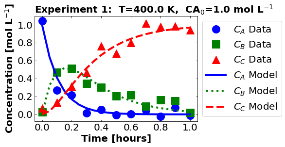
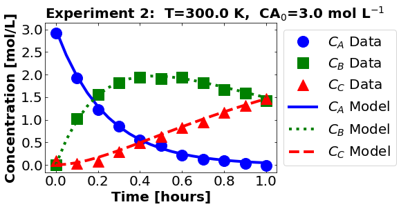
16.1.5. Perform Nonlinear Regression¶
16.1.5.1. Solve Nonlinear Least Squares Problem¶
# nonlinear parameter estimation with full physics model
def regression_func(theta, data):
'''
Function to define regression function for least-squares fitting
Note: This only uses CB measurements
Arguments:
theta: parameter vector
data: Pandas data frame
Returns:
e: residual vector
'''
# determine number of entries in data frame
n = len(data)
# initialize matrix of residuals
# rows: each row of Pandas data frame
# columns: species CA, CB, CC
e = np.zeros(n)
# loop over experiments
for i in data.exp.unique():
# select the rows that correspond to the specific experiment number
j = (data.exp == i)
# determine experiment conditions
CA0_ = float(data.CA0[j].mode())
T_ = float(data.temp[j].mode())
# determine experiment time
t = data.time[j].to_numpy()
CA, CB, CC = batch_rxn_model(theta,t,CA0_,T_)
# Only use CB measurements
e[j] = CB - data.CB[j]
return e
Let’s test our function.
e_test = regression_func(theta_true, df)
print(e_test)
[-0.02717145 0.00320076 -0.00777537 0.07135975 0.00958937 0.0141534
-0.06598771 0.0140551 -0.09022786 -0.10585775 0.01337416 -0.04991088
-0.05147217 0.06417351 0.01765301 0.00686579 -0.05881558 -0.05893812
-0.01370242 0.03223026 -0.0291804 0.00963082]
Finally, we can compute the best fit estimate.
# Initial guess
theta0 = [85., 370., 7.5, 15]
# Bounds
bnds = ([50, 300, 5, 10,], [200, 400, 20, 50])
# Define function that includes data
my_func = lambda theta_ : regression_func(theta_, df)
# Perform nonlinear least squares
nl_results = optimize.least_squares(my_func, theta0, bounds=bnds, method='trf',verbose=2)
Iteration Total nfev Cost Cost reduction Step norm Optimality
0 1 2.4496e-02 9.68e-01
1 2 2.3778e-02 7.18e-04 5.75e+00 4.38e-02
2 3 2.3627e-02 1.51e-04 1.24e+01 3.67e-02
3 4 2.3555e-02 7.24e-05 6.04e+00 3.57e-03
4 5 2.3516e-02 3.86e-05 5.89e+00 4.59e-02
5 6 2.3494e-02 2.20e-05 9.79e-01 1.89e-03
6 7 2.3487e-02 6.86e-06 2.43e+00 1.03e-02
7 8 2.3486e-02 1.15e-06 4.53e-01 6.30e-04
8 9 2.3486e-02 1.33e-07 3.25e-01 3.47e-04
9 10 2.3486e-02 7.51e-09 7.46e-02 5.85e-05
10 11 2.3486e-02 4.14e-10 1.75e-02 1.27e-05
11 12 2.3486e-02 2.45e-11 4.26e-03 3.03e-06
`ftol` termination condition is satisfied.
Function evaluations 12, initial cost 2.4496e-02, final cost 2.3486e-02, first-order optimality 3.03e-06.
theta_hat = nl_results.x
print("theta_hat =",theta_hat)
theta_hat = [ 60.19571236 350.8794687 6.6498327 14.9036598 ]
16.1.5.2. Visualize Results¶
First let’s plot the data and model predictions.
plot_data_and_model(theta_hat, df)
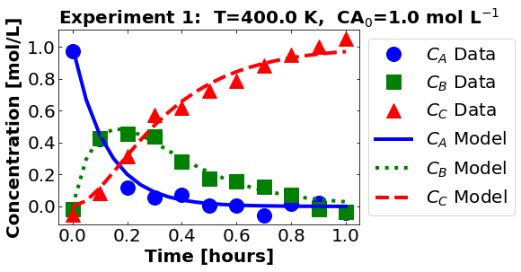
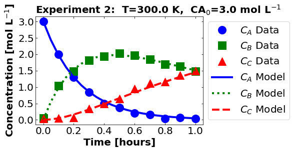
Next, let’s look at the residuals. Recall, we only used \(C_{B}\) in our regression formulation.
CB_residuals = regression_func(theta_hat, df)
# define font size
fs = 20
plt.hist(CB_residuals,color='green')
plt.xlabel("$C_{B}$ residuals [mol L$^{-1}$]",fontsize=fs,fontweight = 'bold')
plt.ylabel("Count",fontsize=fs,fontweight = 'bold')
# define tick size
plt.xlim((-0.07,0.07))
plt.xticks(fontsize=fs,ticks=np.arange(-0.06,0.07,0.03))
plt.yticks(fontsize=fs)
plt.tick_params(direction="in",top=True, right=True)
# finish plot
plt.show()
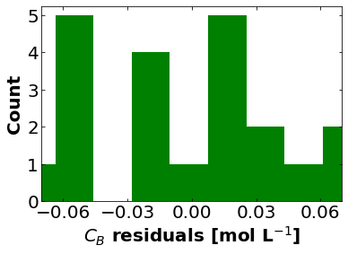
16.1.5.3. Estimate Uncertainty¶
First let’s estimate the variance of the residuals.
sigre = (CB_residuals.T @ CB_residuals)/(len(CB_residuals) - len(theta_hat))
How does the standard deviation of the residuals compare to the standard deviation of the measurement noise?
print("Estimated Standard Deviation of Residuals =",np.sqrt(sigre),"mol/L")
print("Standard Deviation of Measurement Error in Synthetic Data =",noise_std_dev,"mol/L")
Estimated Standard Deviation of Residuals = 0.051083869617246286 mol/L
Standard Deviation of Measurement Error in Synthetic Data = 0.05 mol/L
Estimating the covariance matrix using a linearization approximation is easy!
Sigma_theta = sigre * np.linalg.inv(nl_results.jac.T @ nl_results.jac)
print("Covariance matrix:\n",Sigma_theta)
Covariance matrix:
[[ 1.23192601e+03 -5.20900561e+02 5.14586963e+01 -3.61257277e+00]
[-5.20900561e+02 1.04054481e+04 -2.10576178e+01 7.57031017e+01]
[ 5.14586963e+01 -2.10576178e+01 2.15501996e+00 -1.44699429e-01]
[-3.61257277e+00 7.57031017e+01 -1.44699429e-01 5.54582474e-01]]
Recall the rows/colums are \(A_1\), \(A_2\), \(E_1\), and \(E_2\).
We can easily convert this to a correlation matrix.
corr_theta = Sigma_theta.copy()
for r in range(len(theta_hat)):
for c in range(len(theta_hat)):
corr_theta[r,c] = corr_theta[r,c]/np.sqrt(Sigma_theta[r,r])/np.sqrt(Sigma_theta[c,c])
print("Correlation matrix:\n",corr_theta)
Correlation matrix:
[[ 1. -0.14548966 0.99871327 -0.13821056]
[-0.14548966 1. -0.14062198 0.99655256]
[ 0.99871327 -0.14062198 1. -0.13236041]
[-0.13821056 0.99655256 -0.13236041 1. ]]
Discussion: Why are the pairs \(A_1\), \(E_2\) and \(A_2\), \(E_2\) highly correlated when measuring only \(C_B\)?
16.1.6. Fisher Information Matrix¶
16.1.6.1. Model Sensitivity¶
The first step of calculating the Fisher Information Matrix (FIM) is computing the sensitivity of all model outputs to each model parameter.
def calc_model_output(theta_,data):
'''
Assembles matrix out model outputs (columns) by experimental conditions (rows)
Arguments:
theta_: values of theta parameters, numpy array
data: data frame of experimental conditions
Returns:
model_output: matrix
'''
# Allocate matrix of model outputs
model_output = np.zeros((len(data),3))
# Iterate over rows in pandas dataframe (each row is an experiment)
for i,r in data.iterrows():
# Evaluate model and store results
model_output[i,:] = batch_rxn_model(theta_, r.time, r.CA0, r.temp)
return model_output
# Test function at nominal values
print(calc_model_output(theta_hat,df))
[[ 1.00000000e+00 -0.00000000e+00 0.00000000e+00]
[ 4.42601232e-01 4.47838083e-01 1.09560686e-01]
[ 1.95895850e-01 4.99258939e-01 3.04845210e-01]
[ 8.67037446e-02 4.23340949e-01 4.89955306e-01]
[ 3.83751842e-02 3.23407054e-01 6.38217762e-01]
[ 1.69849038e-02 2.34586224e-01 7.48428873e-01]
[ 7.51753933e-03 1.65299795e-01 8.27182666e-01]
[ 3.32727217e-03 1.14484298e-01 8.82188430e-01]
[ 1.47265476e-03 7.84485952e-02 9.20078750e-01]
[ 6.51798810e-04 5.33941443e-02 9.45954057e-01]
[ 2.88486956e-04 3.61844568e-02 9.63527056e-01]
[ 3.00000000e+00 -0.00000000e+00 0.00000000e+00]
[ 1.97399670e+00 9.78543671e-01 4.74596274e-02]
[ 1.29888766e+00 1.53893892e+00 1.62173422e-01]
[ 8.54666651e-01 1.83131560e+00 3.14017745e-01]
[ 5.62369717e-01 1.95385133e+00 4.83778951e-01]
[ 3.70038655e-01 1.97059103e+00 6.59370311e-01]
[ 2.43485028e-01 1.92316779e+00 8.33347181e-01]
[ 1.60212881e-01 1.83851109e+00 1.00127603e+00]
[ 1.05419899e-01 1.73391515e+00 1.16066495e+00]
[ 6.93661779e-02 1.62037047e+00 1.31026335e+00]
[ 4.56428688e-02 1.50475292e+00 1.44960421e+00]]
We’ll use finite difference to estimate the sensitivities.
def calc_model_sensitivity(theta_,data,verbose=False):
'''
Estimate the model sensitivity matrix using forward finite difference
Arguments:
model_function: Python function that computes model outputs
theta_: nominal value of theta
exp_design_df: data frame containing experimental data
'''
# Evaluate model at nominal point
nominal_output = calc_model_output(theta_,data)
# Extract number of experiments and number of measured/output variables
(n_exp, n_output) = nominal_output.shape
# Set finite difference step size
eps = 1E-5
# Extract number of parameters
n_param = len(theta_)
# Create list to store model sensitity matrices
model_sensitivity = []
# Loop over number of outputs
for i in range(n_output):
# Allocate empty sensitivty matrix
model_sensitivity.append(np.zeros((n_exp,n_param)))
# Loop over parameters
for p in range(n_param):
# Create perturbation vector
perturb = np.zeros(n_param)
perturb[p] = eps
# Forward and backward perturbation simulations
output_forward = calc_model_output(theta_ + perturb, data)
output_backward = calc_model_output(theta_ - perturb, data)
sensitivity = (output_forward - output_backward) / (2*eps)
if verbose:
print("\nparam ",p)
print("sens:\n",sensitivity)
# Loop over outputs
for o in range(n_output):
# Copy sensitivity results
model_sensitivity[o][:,p] = sensitivity[:,o].copy()
return model_sensitivity
model_sensitivity = calc_model_sensitivity(theta_hat, df)
print("CA sensitivity:\n",model_sensitivity[0])
print("CB sensitivity:\n",model_sensitivity[1])
print("CC sensitivity:\n",model_sensitivity[2])
CA sensitivity:
[[ 0.00000000e+00 0.00000000e+00 0.00000000e+00 0.00000000e+00]
[-5.99308628e-03 0.00000000e+00 1.08473065e-01 0.00000000e+00]
[-5.30509474e-03 0.00000000e+00 9.60206244e-02 0.00000000e+00]
[-3.52206220e-03 0.00000000e+00 6.37482699e-02 0.00000000e+00]
[-2.07849209e-03 0.00000000e+00 3.76200837e-02 0.00000000e+00]
[-1.14992895e-03 0.00000000e+00 2.08133692e-02 0.00000000e+00]
[-6.10751962e-04 0.00000000e+00 1.10544274e-02 0.00000000e+00]
[-3.15372833e-04 0.00000000e+00 5.70815373e-03 0.00000000e+00]
[-1.59525033e-04 0.00000000e+00 2.88735528e-03 0.00000000e+00]
[-7.94317233e-05 0.00000000e+00 1.43769038e-03 0.00000000e+00]
[-3.90628651e-05 0.00000000e+00 7.07026147e-04 0.00000000e+00]
[ 0.00000000e+00 0.00000000e+00 0.00000000e+00 0.00000000e+00]
[-1.37255674e-02 0.00000000e+00 3.31238206e-01 0.00000000e+00]
[-1.80628165e-02 0.00000000e+00 4.35908751e-01 0.00000000e+00]
[-1.78279701e-02 0.00000000e+00 4.30241218e-01 0.00000000e+00]
[-1.56410463e-02 0.00000000e+00 3.77464331e-01 0.00000000e+00]
[-1.28647390e-02 0.00000000e+00 3.10463893e-01 0.00000000e+00]
[-1.01579810e-02 0.00000000e+00 2.45141881e-01 0.00000000e+00]
[-7.79793037e-03 0.00000000e+00 1.88186936e-01 0.00000000e+00]
[-5.86403384e-03 0.00000000e+00 1.41516339e-01 0.00000000e+00]
[-4.34084379e-03 0.00000000e+00 1.04757295e-01 0.00000000e+00]
[-3.17363383e-03 0.00000000e+00 7.65890944e-02 0.00000000e+00]]
CB sensitivity:
[[ 0.00000000e+00 0.00000000e+00 0.00000000e+00 0.00000000e+00]
[ 4.61827651e-03 -2.71063771e-04 -8.35894205e-02 2.85979738e-02]
[ 2.46461566e-03 -6.42949655e-04 -4.46088047e-02 6.78329569e-02]
[ 1.85639135e-04 -8.65191890e-04 -3.36001276e-03 9.12801246e-02]
[-1.05210156e-03 -9.27222929e-04 1.90427229e-02 9.78245698e-02]
[-1.46084333e-03 -8.79781042e-04 2.64408263e-02 9.28193197e-02]
[-1.41854758e-03 -7.74507346e-04 2.56752860e-02 8.17126555e-02]
[-1.19237450e-03 -6.48453717e-04 2.15816210e-02 6.84136508e-02]
[-9.27406454e-04 -5.23916476e-04 1.67857788e-02 5.52746293e-02]
[-6.88060464e-04 -4.12277712e-04 1.24536881e-02 4.34964325e-02]
[-4.95089656e-04 -3.17945453e-04 8.96097436e-03 3.35441197e-02]
[ 0.00000000e+00 0.00000000e+00 0.00000000e+00 0.00000000e+00]
[ 1.30404567e-02 -1.31163208e-04 -3.14704475e-01 1.84507729e-02]
[ 1.60314811e-02 -4.33758707e-04 -3.86886670e-01 6.10169817e-02]
[ 1.44180174e-02 -8.11295697e-04 -3.47949058e-01 1.14125238e-01]
[ 1.10878622e-02 -1.20516932e-03 -2.67582643e-01 1.69531570e-01]
[ 7.48459411e-03 -1.58114537e-03 -1.80625212e-01 2.22420247e-01]
[ 4.25829331e-03 -1.92052719e-03 -1.02765110e-01 2.70161201e-01]
[ 1.64003551e-03 -2.21439687e-03 -3.95788677e-02 3.11499944e-01]
[-3.47007834e-04 -2.45987398e-03 8.37431696e-03 3.46031293e-01]
[-1.77189903e-03 -2.65769711e-03 4.27611219e-02 3.73859139e-01]
[-2.73510726e-03 -2.81067091e-03 6.60061621e-02 3.95378013e-01]]
CC sensitivity:
[[ 0.00000000e+00 0.00000000e+00 0.00000000e+00 0.00000000e+00]
[ 1.37480977e-03 2.71063771e-04 -2.48836446e-02 -2.85979738e-02]
[ 2.84047908e-03 6.42949655e-04 -5.14118197e-02 -6.78329569e-02]
[ 3.33642306e-03 8.65191890e-04 -6.03882572e-02 -9.12801246e-02]
[ 3.13059366e-03 9.27222932e-04 -5.66628066e-02 -9.78245698e-02]
[ 2.61077228e-03 8.79781042e-04 -4.72541955e-02 -9.28193197e-02]
[ 2.02929955e-03 7.74507347e-04 -3.67297134e-02 -8.17126555e-02]
[ 1.50774733e-03 6.48453718e-04 -2.72897747e-02 -6.84136508e-02]
[ 1.08693149e-03 5.23916477e-04 -1.96731341e-02 -5.52746293e-02]
[ 7.67492192e-04 4.12277712e-04 -1.38913785e-02 -4.34964325e-02]
[ 5.34152517e-04 3.17945453e-04 -9.66800051e-03 -3.35441197e-02]
[ 0.00000000e+00 0.00000000e+00 0.00000000e+00 0.00000000e+00]
[ 6.85110668e-04 1.31163208e-04 -1.65337306e-02 -1.84507729e-02]
[ 2.03133532e-03 4.33758707e-04 -4.90220805e-02 -6.10169817e-02]
[ 3.40995259e-03 8.11295697e-04 -8.22921598e-02 -1.14125238e-01]
[ 4.55318402e-03 1.20516932e-03 -1.09881688e-01 -1.69531570e-01]
[ 5.38014492e-03 1.58114537e-03 -1.29838681e-01 -2.22420247e-01]
[ 5.89968768e-03 1.92052719e-03 -1.42376771e-01 -2.70161201e-01]
[ 6.15789486e-03 2.21439687e-03 -1.48608068e-01 -3.11499944e-01]
[ 6.21104167e-03 2.45987398e-03 -1.49890656e-01 -3.46031293e-01]
[ 6.11274282e-03 2.65769711e-03 -1.47518417e-01 -3.73859139e-01]
[ 5.90874109e-03 2.81067091e-03 -1.42595257e-01 -3.95378013e-01]]
We are now ready to compute the FIM for each of the three measurements:
16.1.6.2. FIM By Measurement Type¶
# Allocate list of FIM
FIM = []
measurements = ['CA','CB','CC']
for i in range(len(measurements)):
FIM.append( 1/noise_std_dev**2 * model_sensitivity[i].T @ model_sensitivity[i])
print("FIM for",measurements[i],"measurements:\n",FIM[i],"\n")
FIM for CA measurements:
[[ 0.62101809 0. -14.78761585 0. ]
[ 0. 0. 0. 0. ]
[-14.78761585 0. 353.25997002 0. ]
[ 0. 0. 0. 0. ]]
FIM for CB measurements:
[[ 3.52462201e-01 -1.68222293e-02 -8.41981427e+00 2.39540204e+00]
[-1.68222293e-02 1.55429065e-02 4.10947189e-01 -2.12403745e+00]
[-8.41981427e+00 4.10947189e-01 2.01635844e+02 -5.83332127e+01]
[ 2.39540204e+00 -2.12403745e+00 -5.83332127e+01 2.92206909e+02]]
FIM for CC measurements:
[[ 1.18254729e-01 4.18880966e-02 -2.74245030e+00 -5.69701603e+00]
[ 4.18880966e-02 1.55429065e-02 -9.77361087e-01 -2.12403745e+00]
[-2.74245030e+00 -9.77361087e-01 6.41673682e+01 1.33949092e+02]
[-5.69701603e+00 -2.12403745e+00 1.33949092e+02 2.92206909e+02]]
Discussion:
What would measuring only \(C_{A}\) only provide information about \(A_1\) and \(E_1\)?
If you could only choose to measure ONE species (\(C_A\), \(C_B\), or \(C_C\)), which would you choose and why?
16.1.6.3. Eigendecomposition¶
Next let’s interpret the eigendecomposition of each FIM.
measurements = ['CA','CB','CC']
for i in range(len(measurements)):
# Compute eigendecomposition
w, v = linalg.eigh(FIM[i])
print("**********\nConsidering measurement",measurements[i],"")
for j in range(len(v)):
print("\neigenvalue =",w[j])
print("eigenvector:",v[j])
print("**********\n")
**********
Considering measurement CA
eigenvalue = 0.0
eigenvector: [ 0. 0. 0.99912499 -0.04182404]
eigenvalue = 0.0
eigenvector: [1. 0. 0. 0.]
eigenvalue = 0.0019985610797448317
eigenvector: [0. 0. 0.04182404 0.99912499]
eigenvalue = 353.8789895479765
eigenvector: [0. 1. 0. 0.]
**********
**********
Considering measurement CB
eigenvalue = 0.00010002598966960827
eigenvector: [-0.05652112 0.99752751 0.03755294 0.0182759 ]
eigenvalue = 0.0008665771775742963
eigenvector: [ 0.99837235 0.05656504 0.00327152 -0.00650666]
eigenvalue = 173.31970749202924
eigenvector: [-0.00229388 0.04170076 -0.89684167 -0.44037575]
eigenvalue = 320.8900834679623
eigenvector: [ 7.26253275e-03 5.58531236e-04 -4.40742661e-01 8.97603949e-01]
**********
**********
Considering measurement CC
eigenvalue = 5.257968489616159e-06
eigenvector: [-0.2948917 0.95435576 0.04387845 -0.01785095]
eigenvalue = 0.0010744990802900002
eigenvector: [ 0.9554207 0.2951698 -0.00157749 -0.00660191]
eigenvalue = 2.285696505158169
eigenvector: [-0.01268868 0.0456054 -0.90659375 0.41934105]
eigenvalue = 354.2212982128159
eigenvector: [ 7.01209818e-03 -1.53556800e-04 4.19714150e-01 9.07629241e-01]
**********
16.1.6.4. Optimality metrics¶
def optimality_metrics(FIM, verbose=True):
''' Compute optimality metrics using eigenvalues
Arguments:
FIM: numpy array
Returns:
dopt, aopt, eopt (float)
'''
# Compute eigendecomposition
# Compute eigendecomposition
eigenvalues, eigenvectors = linalg.eigh(FIM)
# Determinant
dopt = np.product(eigenvalues)
# Trace
aopt = np.sum(eigenvalues)
# Min eigenvalue
eopt = np.min(eigenvalues)
if verbose:
print("D-optimality =",dopt)
print("A-optimality =",aopt)
print("E-optimality =",eopt)
return dopt, aopt, eopt
measurements = ['CA','CB','CC']
for i in range(len(measurements)):
print("**********\nConsidering measurement",measurements[i],"")
optimality_metrics(FIM[i],True)
print("**********\n")
**********
Considering measurement CA
D-optimality = 0.0
A-optimality = 353.88098810905626
E-optimality = 0.0
**********
**********
Considering measurement CB
D-optimality = 0.00482085809351815
A-optimality = 494.21075756315884
E-optimality = 0.00010002598966960827
**********
**********
Considering measurement CC
D-optimality = 4.574222247788077e-06
A-optimality = 356.50807447502285
E-optimality = 5.257968489616159e-06
**********
16.1.7. What is the next best experiment?¶
temperatures = np.linspace(300, 550, 26)
intial_concentrations = np.linspace(1,5,11)
# Allocate lists and empty arrays
Dopt = []
Aopt = []
Eopt = []
measurements = ['$C_{A}$','$C_{B}$','$C_{C}$']
for k in range(len(measurements)):
empty_matrix = np.zeros((len(temperatures),len(intial_concentrations)))
Dopt.append(empty_matrix)
Aopt.append(empty_matrix.copy())
Eopt.append(empty_matrix.copy())
# Loop over proposed temperatures
for i,T in enumerate(temperatures):
# Loop over proposed concentrations
for j,C in enumerate(intial_concentrations):
# Create df for new experiment
exp3 = np.zeros((n_time,4))
# Assign 3 to column 0. This is the experiment number.
exp3[:,0] = 3
# Copy C into column 1
exp3[:,1] = C.copy()
# Copy T into column 2
exp3[:,2] = T.copy()
# Copy time data into column 3
exp3[:,3] = time_exp
# Create dataframe for new experiments
new_df = pd.DataFrame(exp3, columns=['exp', 'CA0','temp','time'])
# Calculate model sensitivities
model_sensitivity = calc_model_sensitivity(theta_hat, new_df)
# Loop over measurements
for k in range(len(measurements)):
# Compute FIM of proposed experiment
FIM_new = 1/noise_std_dev**2 * model_sensitivity[k].T @ model_sensitivity[k]
# Compute total FIM (prior + new)
FIM_total = FIM[k] + FIM_new
'''
print("\ni =",i)
print("j =",j)
print(FIM_total)
'''
# Compute A and D-optimality
Dopt[k][i,j] = np.linalg.det(FIM_total)
Aopt[k][i,j] = np.trace(FIM_total)
# Compute E-optimality
smallest_eigenvalue = linalg.eigh(FIM_total, eigvals_only=True, subset_by_index=[0, 0])
Eopt[k][i,j] = smallest_eigenvalue[0]
Let’s make a function that visualizes the MBDoE metrics as a heatmap.
def create_contour_plot(matrix, zlabelstring, clabel_fmt="%2.2f",x=temperatures, y=intial_concentrations):
# draw figure, using (6,6) because the plot is small otherwise
plt.figure(figsize=(6,6))
# define font size
fs = 20
# plot heatmap
# cmap defines the overall color within the heatmap
# levels: determines the number and positions of the contour lines / regions.
cs = plt.contourf(x, y, matrix,cmap=cm.coolwarm, levels=100)
# plot color bar
cbar = plt.colorbar(cs)
# plot title in color bar
cbar.ax.set_ylabel(zlabelstring, fontsize=fs, fontweight='bold')
# set font size in color bar
cbar.ax.tick_params(labelsize=fs)
# plot equipotential line
# [::10] means sampling 1 in every 10 samples
# colors define the color want to use, 'k' for black
# alpha is blending value, between 0 (transparent) and 1 (opaque).
# linestyle defines the linestyle.
# linewidth defines the width of line
cs2 = plt.contour(cs, levels=cs.levels[::15], colors='k', alpha=0.7, linestyles='dashed', linewidths=3)
# plot the heatmap label
# %2.2f means keep to 2 digit
# fontsize defines the size of the text in figure
plt.clabel(cs2, fmt=clabel_fmt, colors='k', fontsize=fs)
# define tick size
plt.xticks(fontsize=fs)
plt.yticks(fontsize=fs)
plt.tick_params(direction="in",top=True, right=True)
# set squared figure
# plt.axis('square')
# Plot data from previous two experiments
plt.plot([T_exp1, T_exp2], [CA0_exp1, CA0_exp2], marker='*', markersize=20, color='k', linestyle="")
# plot titile and x,y label
plt.xlabel("Temperature [K]", fontsize=fs, fontweight='bold')
plt.ylabel("Initial Concentration [mol L$^{-1}$]", fontsize=fs, fontweight='bold')
plt.show()
16.1.7.1. A-Optimality¶
We’ll start by plotting A-optimality seperately for each of the three measurement types. The stars mark the prior two experiments. The colored contours show metrics of the FIM depending \(T\) and \(C_{A0}\) for the third experiment.
for k,m in enumerate(measurements):
create_contour_plot(Aopt[k].transpose(), "A-optimality for "+m, "%2.0f")
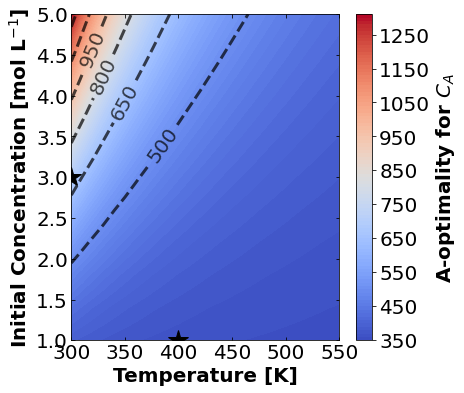
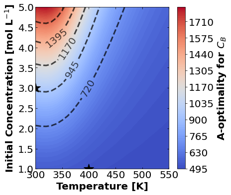
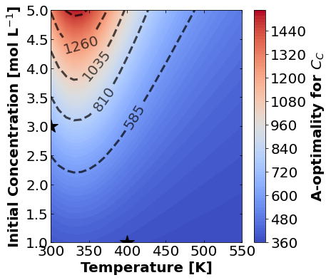
16.1.7.2. D-Optimality¶
Likewise, let’s make plots for D-optimality.
for k,m in enumerate(measurements):
create_contour_plot(Dopt[k].transpose(), "D-optimality for "+m, "%2.4f")
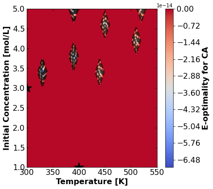
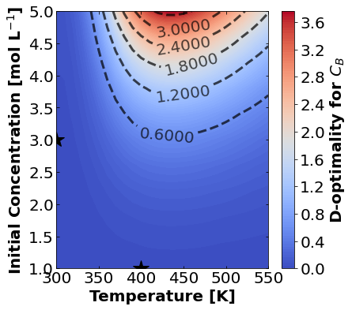
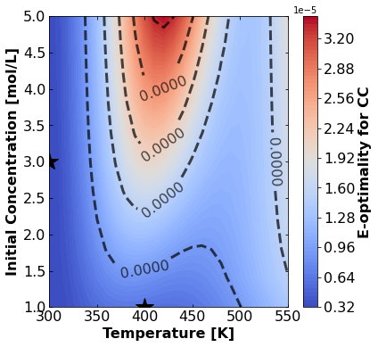
16.1.7.3. E-Optimality¶
And finally E-optimality.
for k,m in enumerate(measurements):
create_contour_plot(Eopt[k].transpose(), "E-optimality for "+m, "%2.4f")
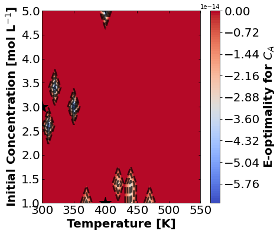
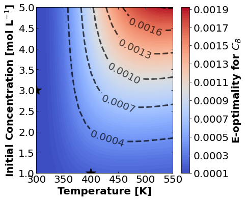
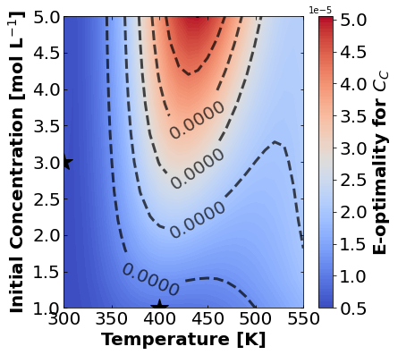
16.1.7.4. Discussion¶
Based on the plots for D-, A-, and E-optimality, why is it a bad idea to only measure \(C_{A}\)? Using the mathematical model for the experiment, explain why this makes sense.
Why are D- and E-optimality approximately an order of magnitude larger for measuring \(C_{B}\) instead of \(C_{C}\)?
Why do D- and E-optimality both recommend a third experiment at the maximum value for \(C_{A0}\)? Using the mathematical model and assumed measurement error structure, explain why this makes sense.
Why do A-, D-, and E-optimality recommend a third experiment at low, medium, and high temperatures, respectively? Which one should we choose if we can only do one more experiment?
16.1.8. Take Away Messages¶
Fisher information matrix quantifies the value of data in the context of a mathematical model
An eigendecomposition of the Fisher information matrix reveals which parameters are (locally) not identiafiable
A-, D-, and E-optimality help inform which experimental conditions and measurements are most informative
Heatmaps of these optimality matrics help build intuition about the model